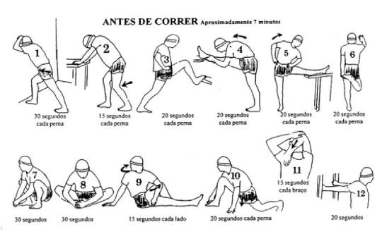
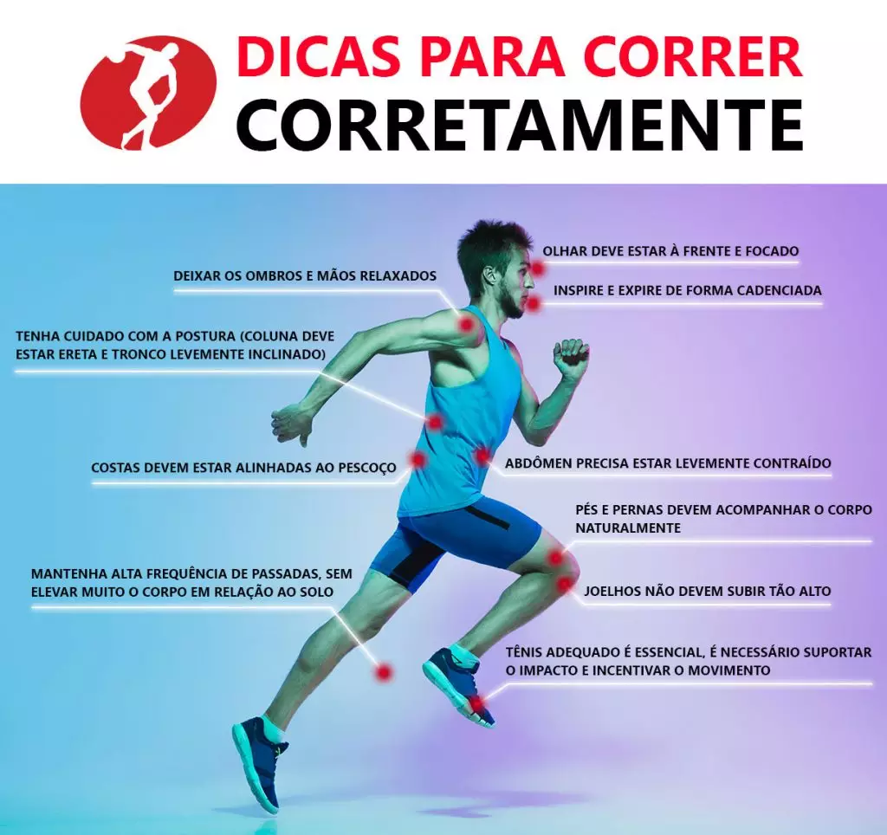

A prática da corrida
Como executar? Como se preparar? Quais cuidados devo tomar?
Você pode tirar todas essas dúvidas aqui!
Como se preparar?
Na preparção, deve se fazer exercícios de alongamento corporal para evitar lesões de quaisquer naturezas. Alguns alongamentos são essenciais para a pré-prática do exercício, como:

Como executar?
A execução desse esporte requer equipamento adequado como tênis para corrida, roupas leves para terinar e garrafa de água para manter-se hidratado.
!!! Além disso, devemos nos preocupar com as condições temporais da ocasião: se for se exercitar em ambiente aberto, é aconselhável uso de protetor solar, óculos escuros e itens de chapelaria que possam evitar contato direto com o sol.
Segue post informacional para correr corretamente!
